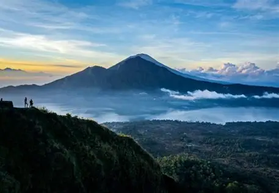
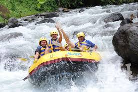
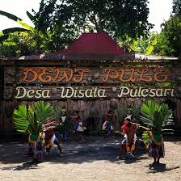
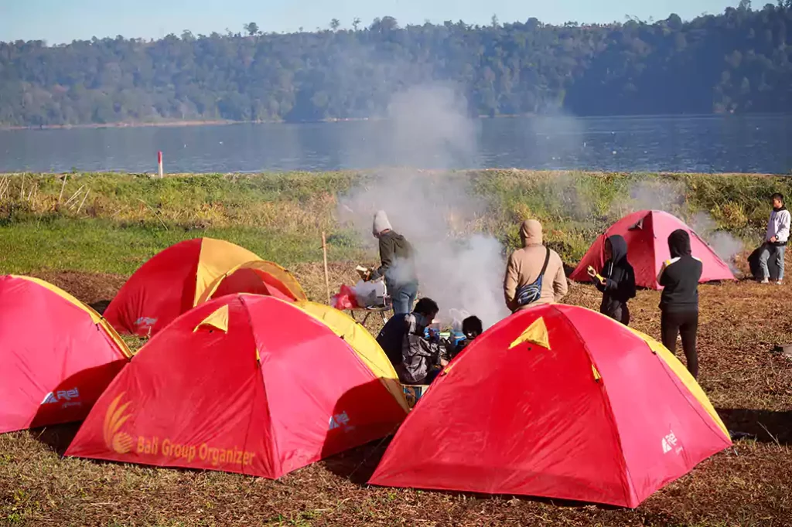

Paket Wisata Populer

Diposting pada 11 September 2025
Paket Mendaki Gunung Batur dan Ayung Rafting Ubud
Nikmati petualangan tak terlupakan mendaki Gunung Batur saat fajar dan memacu adrenalin dengan rafting di Sungai Ayung.

Diposting pada 29 Agustus 2025
Paket Kuber Bali ATV dan Ayung Rafting - Harga Promo
Jelajahi pedesaan Bali dengan ATV dan lanjutkan keseruan dengan arung jeram. Dapatkan harga promo spesial bulan ini!

Diposting pada 15 Juli 2025
Jelajah Budaya dan Kuliner Lokal
Pelajari kearifan lokal, kunjungi museum salak, dan cicipi hidangan otentik khas Desa Pulesari yang menggugah selera.

Diposting pada 01 Juni 2025
Paket Berkemah Keluarga Ceria
Habiskan malam di alam terbuka dengan fasilitas camping yang lengkap. Cocok untuk liburan akhir pekan bersama keluarga.